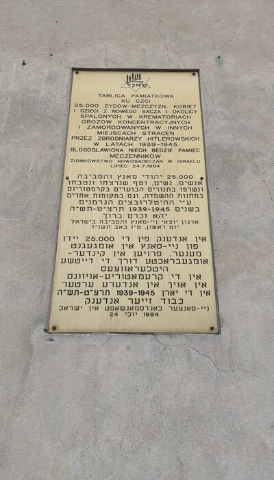

Informacje o Getto Żydowskie

Getta Żydowskie 1939-1945: to zamknięte dzielnice w których zamieszkiwali Żydzi, zostały utworzone w 1939r. Getta były głównym celem dla wyniszczenia Żydów. Powstały ony w częściach nadbałtyckich takich jak: Ukraina czy Białoruś. Pierwsze getto powstało w październku 1939r. w Piotrkowie.
Moliwa ye druga info